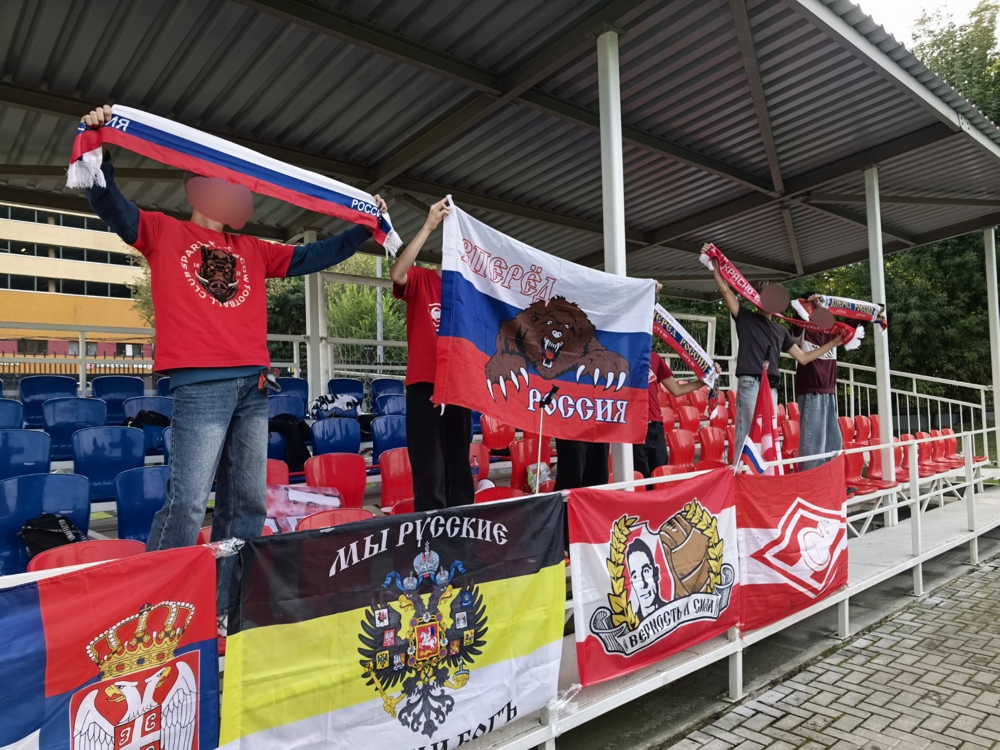
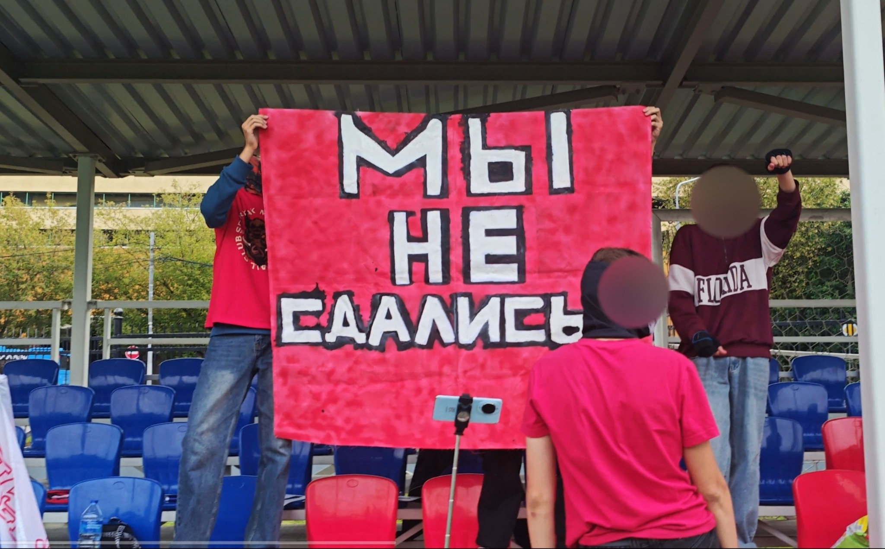
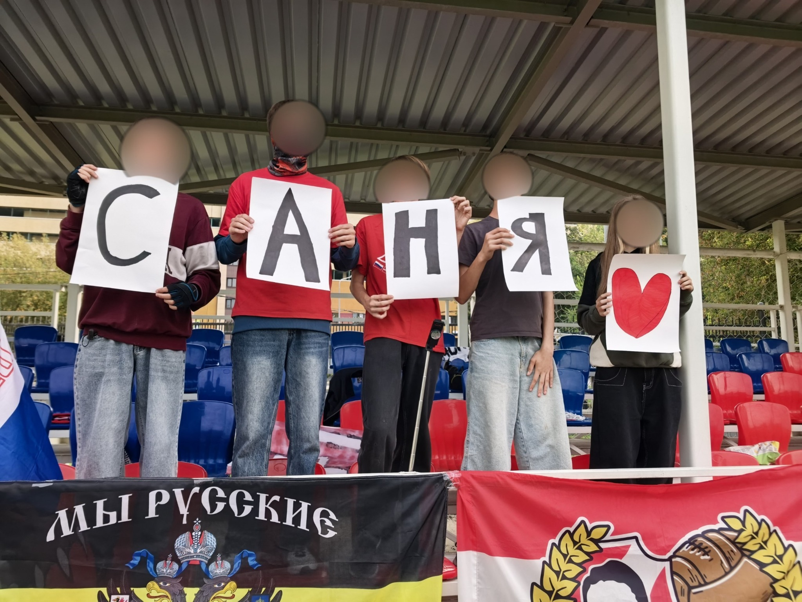
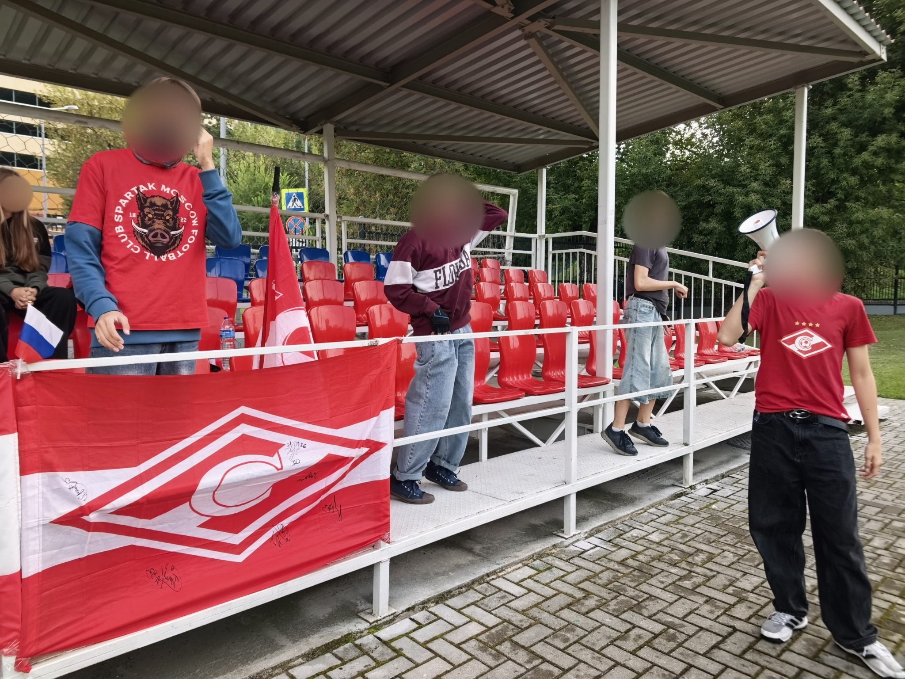
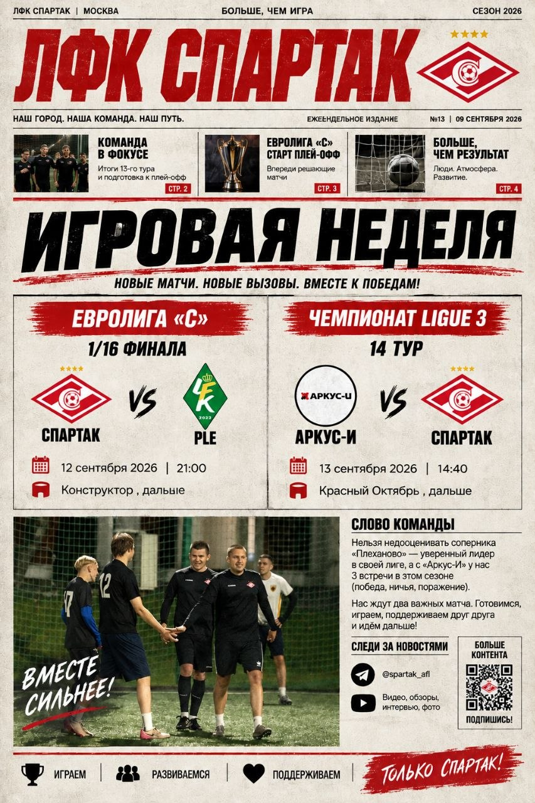
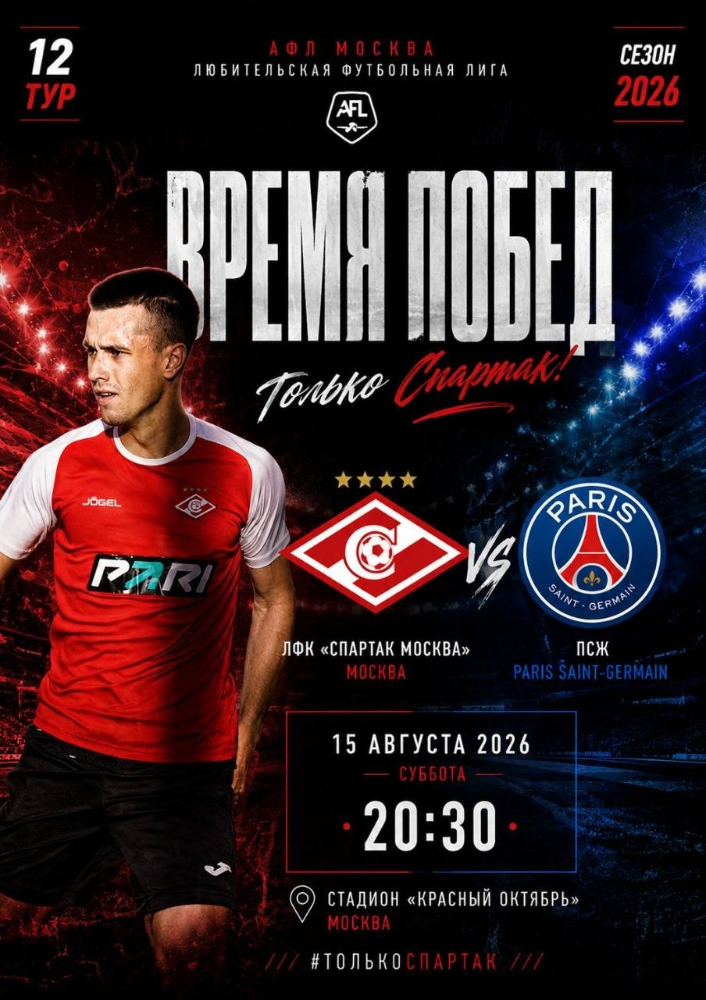

Московские турниры ООО «АФЛ», стадион «Красный Октябрь», соревнования АФЛ 8×8 и кубковые турниры 6×6.
Основная деятельность проекта — участие любителей в организованных соревнованиях. В истории команды есть игроки без детской футбольной подготовки.
В 2024 году зарегистрирована АНО ЛФК «Красно-белый ромб» для взаимодействия с юридическими лицами и дальнейшего развития проекта.
Команда стюардов «Открытие Арены». Начало выступлений в АФЛ 8×8.
После прекращения первоначальной поддержки команда продолжила играть под руководством Вадима Атаулина.
Регистрация АНО для взаимодействия с юридическими лицами.
Матчи объединяют игроков, их близких и болельщиков. Команда сохраняет вокруг себя живое футбольное сообщество.





Анонсы матчей, результаты, фото, видеообзоры и жизнь команды публикуются в официальных каналах.

Газета.Ru, 23 мая 2025: «Мостовой возглавил „Спартак“». Издание рассказало о том, как Александр Мостовой стал тренером любительского московского «Спартака».
Московская любительская футбольная команда, выступающая в организованных соревнованиях с 2016 года. Команда участвует в турнирах АФЛ по футболу 8×8 и кубковых соревнованиях 6×6.
В составе команды играют футболисты разного возраста и уровня подготовки. За историю проекта через команду прошло более 300 человек, а текущая заявка объединяет 30 игроков.
Проект объединяет игроков, болельщиков и семьи вокруг любительского футбола. Организационную основу проекта составляет АНО ЛФК «Красно-белый ромб».
С 2019 года проект продолжает существовать после прекращения первоначальной поддержки.
Приоритет — участие в любительских соревнованиях и сохранение сообщества игроков.
Дополнительная поддержка позволит организовать регулярные тренировки и улучшить обеспечение команды формой и инвентарём.
АНО ЛФК «Красно-белый ромб»
ЛФК «Спартак Москва»
Москва · стадион «Красный Октябрь»